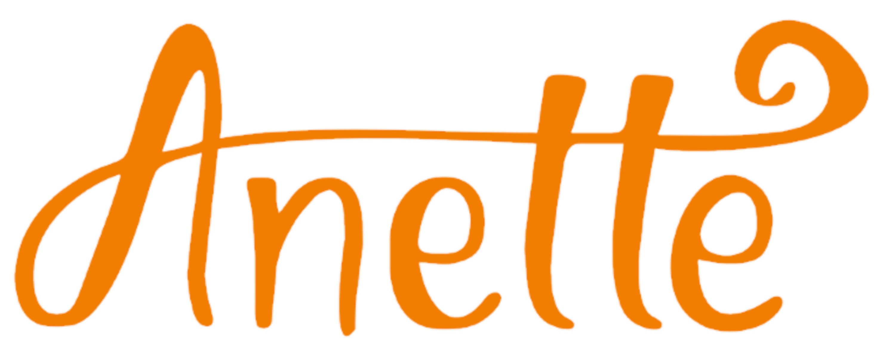
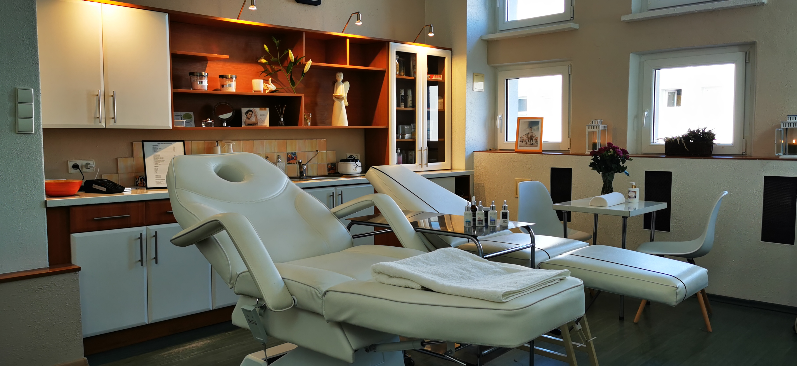

Gabinet Kosmetyczny Anette

👁️✨ Makijaż permanentny brwi i ust w gabinecie „Anette”. 👁️✨
Makijaż permanentny to sposób na perfekcyjny detal każdego dnia bez konieczności codziennego malowania. Pigmenty dobieram indywidualnie, aby podkreślić naturalne piękno i wyrównać symetrię.
Zabieg polecam w szczególności osobom, które chcą zagęścić brwi, nadać kontur ust albo uzyskać subtelne podkreślenie oka. Po wizycie otrzymasz dokładne zalecenia pielęgnacyjne.
Zapraszam do umawiania się na konsultację wstępną – razem dobierzemy idealny odcień i kształt.
Zadzwoń teraz